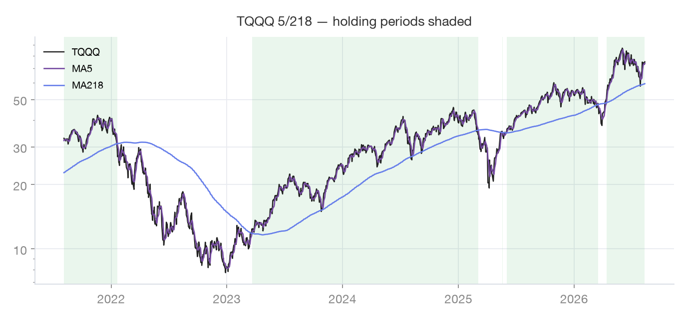
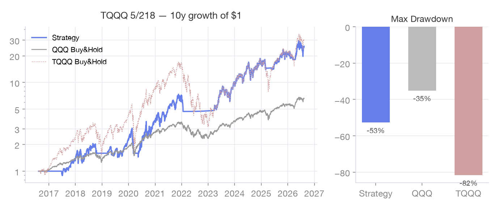

Fewer trades
TQQQ 5,218
TQQQ’s own 5×218-day SMAs — a variant that trades less and rides trends longer.
How it works
Compared to the original 1/200, the signal line is lengthened to 5 days and the base line to 218 days,
reducing crossovers. Optimization part 2 (fees included) recommended keeping n1 short and letting n2 float in the
210–230 band; this is the app’s TQQQ-signal variant within that band. The least demanding to execute.
Signal & traded assets
| Signal (chart) | TQQQ itself · 5-day × 218-day SMA |
|---|
| Traded asset | TQQQ (3x Nasdaq) |
|---|
| Parked after sell | SGOV (short-term treasuries) |
|---|
Rules
| Signal | TQQQ 5-day vs 218-day SMA |
|---|
| Buy | 5-day crosses above 218-day → buy TQQQ |
|---|
| Sell | 5-day crosses below 218-day → sell all TQQQ |
|---|
| Basis | Optimization part 2: base-line band 210–230 holds up after fees |
|---|
Charts on real data

Last 5 years · green shading = holding periods

Last 10 years · growth of $1 (no taxes/fees)
FAQ
- How is it different from 1/200?
- The 5-day signal line ignores one-day spikes and the 218-day base crosses less often — later entries/exits, but fewer trades, fees and tax events.
- Does the base line have to be exactly 218?
- No. The optimization series concluded any base in the 210–230 band works with a short signal line. Treating one number as special is overfitting — 218 is just a representative value.
- Do fewer trades mean missed gains?
- Entries and exits are later, but trading costs, tax events and execution mistakes drop. Backtests kept CAGR close to the original while cutting the effort — that is this variant's value.
Sources
Backtest charts on this page reproduce the app’s rules on Yahoo Finance daily data (last 10 years,
adjusted closes) for reference only. Taxes, fees and slippage are not modeled, and past performance does not
guarantee future results. Rule descriptions and live signals always follow the app’s latest implementation.
Nothing here is investment advice; decisions and responsibility remain yours.
Enable this strategy in the app → Settings · Strategy